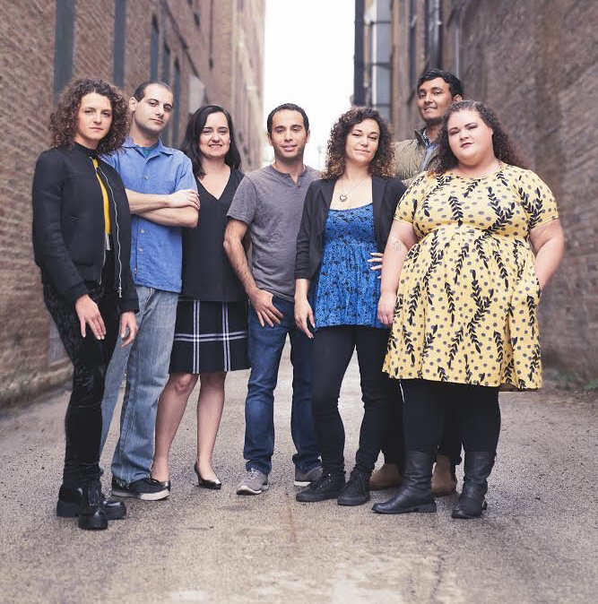

Who We Are
A Little More Info
Immigrant Sandwich features a diverse ensemble cast who vary from improv comedy fanatics to graduates of The Second City Training Center Improv Program. We are made up of American immigrants--both recent and not-so-recent! Our mission is to deliver exotic comedy freshly handpicked from the borders as a tasteful antidote to xenophobia. In other words, we’re more organic than Chipotle and better for you than any wellness shot you can buy at Whole Foods.
Improvisation
Our signature game is an original we created called “We Speak American.” In this game, ensemble players speak only their native languages—no English—and communicate by using universal expressions, exaggerated physical gestures, and sheer willpower. Our aim in this game is to be able to show that communication can and has always been achieved even without the need for the same language. If only our Illinois politicians came to our shows, we bet they’d learn a lot!
Perhaps this game sounds odd to you? If so, you might want to know that we indeed are all very odd. But I digress. You might also want to know that improv comedy was created by women to teach immigrant children how to speak English. So, as far as we’re concerned, we’re just keeping up the long-held tradition of utilizing the arts to embrace different cultures and people.
Like what you’ve read so far? Come join us at one of our upcoming events! Our greatest enthusiasts bring sustainable sandwich bags for us to sign. We also take cash.